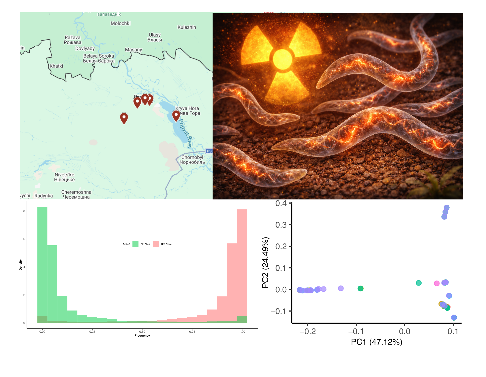

Using various study systems, I ask how molecular and evolutionary processes drive change, while connecting mechanisms at the genome level to adaptation and diversification in nature.
Transitions in mating systems
Sex is nearly universal in animals, yet several parthenogenetic lineages have persisted and diversified for long evolutionary timescales. By comparing sexual and asexual mite species, I investigate how the loss of sex transforms genome architecture, heterozygosity, and the long-term trajectory of genome evolution.
Radiation tolerance and genome stability
Nuclear contamination creates extreme selective pressures, but we know very little about how chronic exposure to radiation reshapes genomes over generations. Using nematodes collected from highly radioactive soils in the Chornobyl Exclusion Zone, I study how radiation drives mutation, genome instability, and potential adaptive responses.
Germline mutation dynamics in ants
Mutations are the raw material of evolution, yet the factors governing when and where they arise remain poorly understood. By sequencing large ant pedigrees, I examine how parental age, caste, and the unique life histories of eusocial insects influence germline mutation rates and spectra.
Broader aim
What connects these projects is a shared interest in understanding how the processes that generate and structure genomic variation ultimately shape the evolutionary potential of natural populations.

